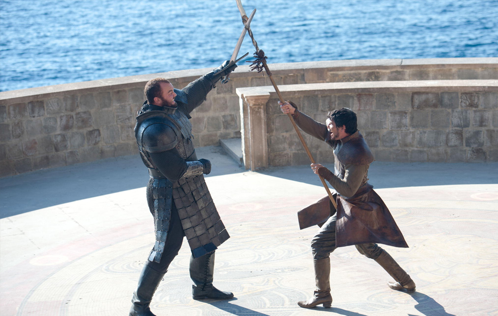

4ª TEMPORADA
Episódio 01 – Two Swords
Sinopse: Tyrion recebe um convidado em Porto Real. Em Castelo Negro, Jon Snow percebe que não é mais bem-vindo. Daenerys parte para Meeren, a principal cidade escravagista de Essos. Arya encontra alguém do seu passado.
Episódio 02 – The Lion and the Rose
Sinopse: Tyrion ajuda Jaime. Joffrey e Margaery realizam um café da manhã. Em Pedra do Dragão, Stannis perde a paciência com Sor Davos. Ramsay Snow encontra um objetivo para seu novo “animal de estimação”. Ao norte da Muralha, Bran vê para onde precisa ir
Episódio 03 – Breaker of Chains
Sinopse: Tyrion considera suas opções e Tywin estende um ramo de oliveira. Sam percebe que Castelo Negro não é seguro, e Jon propõe um plano ousado. Cão de Caça ensina à Arya como as coisas realmente são. Daenerys escolhe seu campeão.
Episódio 04 – Oathkeeper
Sinopse: Daenerys equilibra justiça e piedade. Jaime encarrega Brienne com sua honra. Jon consegue voluntários enquanto Bran, Jojen, Meera e Hodor encontram um abrigo.
incerto. Concordando em Sinopse: O destino de Bran Stark permanece se tornar a Mão do Rei, Ne
Episódio 05 – First of His Name
Sinopse: Cersei e Tywin planejam o próximo movimento da coroa. Daenerys discute seus planos para o futuro. Jon parte em uma missão para a Fortaleza de Craster.
Episódio 06 – The Laws of Gods and Men
Sinopse: Stannis e Davos partem de Pedra do Dragão com uma nova estratégia. Daenerys se encontra com suplicantes. Tyrion Lannister confronta seu pai na Sala do Trono.
Episódio 07 – Mockingbird
Sinopse: Tyrion recebe a ajuda de um aliado inesperado. Daario Naharis pede para que Daenerys deixe ele fazer o que faz de melhor. Os avisos de Jon Snow sobre a vulnerabilidade da Muralha não são ouvidos. Brienne e Podrick seguem uma nova pista na estrada.
Episódio 08 – The Mountain and the Viper
Sinopse: Visitantes inesperados chegam em Vila Toupeira; as motivações de Mindinho são questionadas; Ramsay Snow tenta provar-se para seu pai e o destino de Tyrion Lannister é decidido.

Episódio 09 – The Watchers on the Wall
SSinopse: Jon Snow e a Patrulha da Noite enfrentam os selvagens que atacam em duas frentes. Pessoas queridas morrem e novos heróis surgem dos escombros.
Episódio 10 – The Children
Sinopse: As circunstâncias mudam depois de uma chegada inesperada vinda do norte da Muralha; Daenerys precisa enfrentar duras realidades; Bran descobre mais sobre seu destino e Tyrion enfrenta a verdade sobre sua situação.